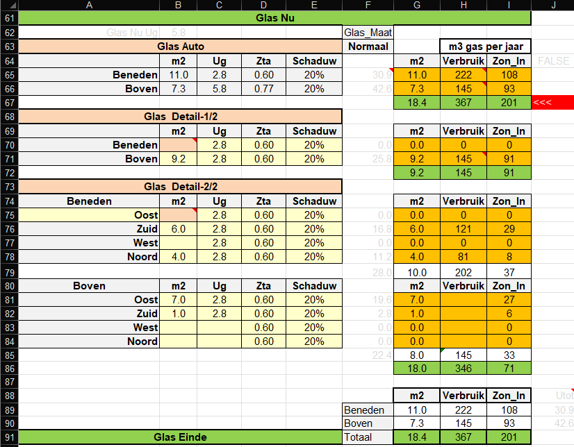

Boven (J17): Ug = 5.8 (enkel glas)
Beneden (J18): Ug = 2.8 (oud dubbel glas)
HR++ : Ug = 1.0
HR+++ : Ug = 0.7
Beng Glas: Ug = 0.5

Omdat de isolatiewaarden van het glas vaak aangepast moeten worden en we willen voorkomen dat je naar het tabblad "Details" moet gaan, kun je in cel J17 en J18 de (gemiddelde) Ug-waarden van het glas boven (J17) en beneden (J18) opgeven.
| Hier is dus aangegeven Boven (J17): Ug = 5.8 (enkel glas) Beneden (J18): Ug = 2.8 (oud dubbel glas) HR++ : Ug = 1.0 HR+++ : Ug = 0.7 Beng Glas: Ug = 0.5 |
|
|---|---|
Dit is een van de moeilijkste instellingen, waarbij de ervaring leert dat je die nooit nodig hebt.
Wel kan dit blok nuttig zijn om een gevoel te krijgen wat je bespaart met de verschillende glastypen op de verschillende lokaties. Gebruik hiervoor het tweede blok Detail 1/2.
Maar ook om de fijnproevers te bedienen hebben we toch deze uitgebreide instellingen ter beschikking gesteld.
Hier zijn 3 keuze blokken van automatisch tot het per gevel opgeven van de ramen.
- Zta = de zon doorlaatbaarheids factor, deze is lager bij zonwerend glas en bij lagere Ug waarden
- Schaduw = hoeveel de ruit (per dag) in de schaduw staat
Dit is allen het deel "Nu", Rechts ervan nog eenzelfde blok voor de verbeterde situatie.
